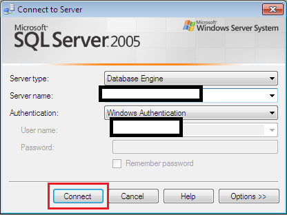
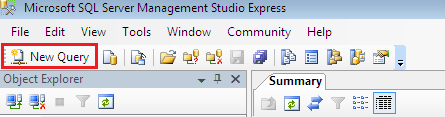
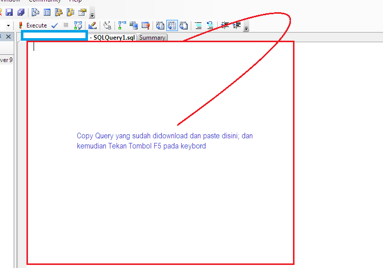
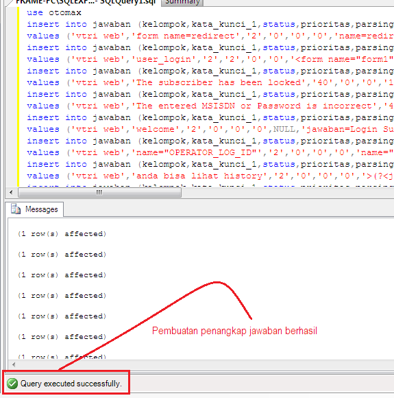
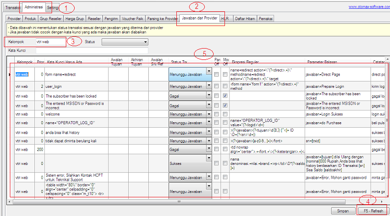
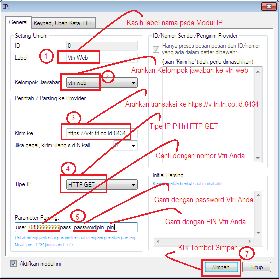
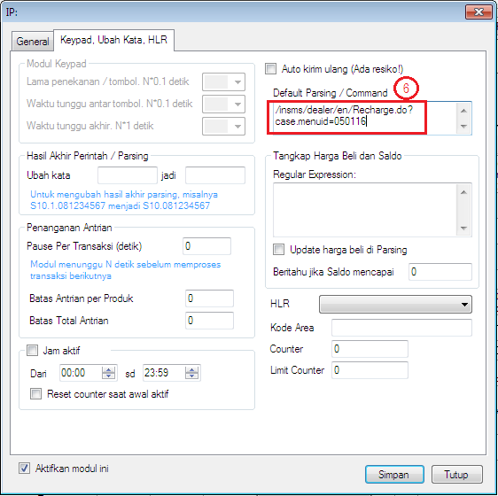
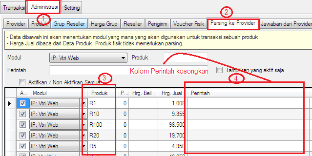

Vtri Web
Di versi 3.6.3 Modul IP Client OtomaX mendukung Cookies dan Perintah Balasan, dengan demikian dapat digunakan bertransaksi via Web, diantaranya ialah transaksi Vtri Web. Perlu diketahui fitur ini hanya berlaku di OtomaX Edisi Standard atau lebih tinggi klik disini. Bila edisi OtomaX Anda belum mendukung upgrade dahulu klik disini, dan bila belum memiliki software OtomaX beli dahulu klik disini.
Bagaimana cara setting Vtri Web? Berikut ulasannya...
-
Download Query untuk membuat penangkap jawaban Vtri Web dibawah ini (pilih salah satu):
Download disini untuk membuat penangkap jawaban dengan melampirkan sisa saldo Vtri
Download disini untuk membuat penangkap jawaban tanpa melampirkan sisa saldo Vtri
-
Jalankan SQL Server Management Studio -> Klik Tombol Connect

Klik Icon New Query

Dan akan muncul seperti berikut:


-
Masuk Menu Administrasi -> Jawaban dari Provider -> Pada Box: Kelompok ketik: vtri web -> Klik tombol Refresh. Penangkap jawaban yang baru Anda buat tampil:

-
Selanjutnya ke Modul IP Client -> Klik kanan -> Klik Tambah IP...


Dari mana kita dapat Password dan PIN Vtri? Ketika Anda mendaftar Vtri akan mendapatkan SMS seperti ini: Anda telah berhasil terdaftar pada layanan V-Tri. PIN Anda 569753, dan Password Anda 7mK10(6!9 Terimakasih!. Nah... PIN dan Password itulah yang diinput di Parameter Parsing
-
Kemudian ke Menu Administrasi -> Parsing ke Provider. Ketik Kode Produk Three di kolom Produk, Kolom Perintah kosongkan (karena sudah menggunakan parsing default di Modul)

- Selesai
Jika memiliki pertanyaan terkait fitur di atas silahkan kirimkan ke alamat email support@otomax-software.com atau klik disini
Catatan 1: Jika password Vtri mengandung karakter (contoh: 7mK10(6!9 – password ini mengandung karakter ( (kurung buka) dan karakter ! (tanda seru)) maka harus diganti dengan karakter yang dikenali oleh web. Karakter ( (kurung buka) diganti dengan karakter %28, sementara karakter ! (tanda seru) diganti dengan %21, sehingga penulisan password pada Parameter Parsing menjadi: 7mK10%286%219
Catatan 2: Setting di atas bekerja normal sebelum website vtri berubah, saat ini website vtri sudah berubah sehingga setting di atas sudah tidak bekerja